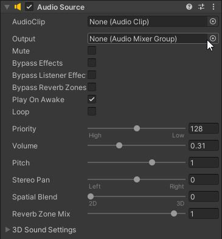

La composante Audio Listener est présente par défaut sur la caméra de votre jeu. Si ce n'est pas le cas, vous devriez l'ajouter. Elle vous permettra d'entendre les sons de votre jeu. Par défaut, le listener est sur la caméra puisque la vue du joueur suit celle de la caméra. Ainsi, il est logique qu'on entende les même bruits que la caméra.
La composante Audio Source est celle qui vous permet de jouer des sons. Habituellement on met cette composante sur les objets qui émettent les sons. Si vous préférez avoir un son général pour votre jeu, vous pouvez faire un clic droit dans la fenêtre hierarchy, puis sélectionner Audio, Audio Source. Ainsi, votre son ne sera pas rattaché à un objet.
Pour fonctionner, la composante Audio Source a premièrement besoin d'un AudioClip, c'est à dire d'une piste sonore. Vous devrez donc importer vos sons dans Unity. Je vous suggère d'importer des fichiers .mp3 dans un dossier nommé Audio. Une fois vos fichiers importés, vous pourrez les glisser dans la boîte AudioClip de la composante AudioSource.
Le paramètre Mute permet de ne plus entendre le son, mais on devrait l'arrêter de jouer plutôt que le muter.
Par défaut, le paramètre Play on awake est coché, il fait en sorte que notre son jouera dès qu'on partira notre jeu. Si on veut le déclencher manuellement à un autre moment, on peut décocher cette boîte.
Le paramètre Loop permet de jouer l'audio en boucle lorsqu'il est coché.
Le paramètre Volume vous permet d'ajuster le volume de votre audio.
Ci-haut, on a un exemple de code simple pour jouer une AudioSource manuellement. En créant un objet public AudioSource, on peut glisser n'importe quel AudioSource de notre jeu dans ce script. Ensuite, lorsqu'on appelle la fonction playAudio, notre son sera joué.
Si on ne veut pas faire jouer le son immédiatement, on peut utiliser PlayDelayed. On doit alors spécifier entre parenthèse le nombre de seconde de délais avant que notre son soit déclenché.
L'exemple ci-haut montre de quelle façon on peut faire jouer un clip avec la composante AudioSource. Ce qui est intéressant avec PlayOneShot, c'est qu'on doit spécifier à la source quel clip jouer, ainsi, on peut faire jouer des clips différents grâce à cette source. Play one shot comme son nom l'indique, jouera le clip une seule fois.
Ce code permet de mettre l'audio sur pause.